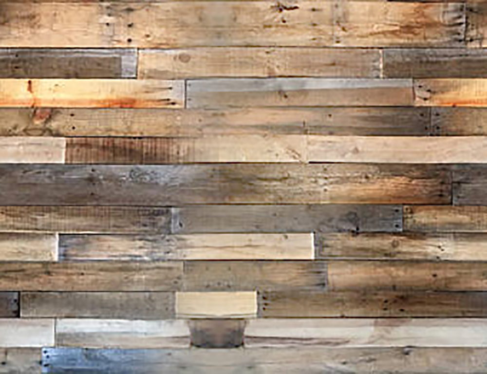

SpotLight Manipulation
Enable/Disable SpotLight
Spotlight: cut off 1
80
Spotlight: angle 0
80
X Direction -1
1
Y Direction -1
1
Z Direction -10
0
Rotation Manipulation
Sart/Stop
Rotate X
Rotate Y
Rotate Z
Direction
Texture
Enable/Disable Texture
Projection And View Manipulation
Increase Z
Decrease Z
radius 1
10
phi -90
90
fov 0
100
aspect 0.5
2
theta -90
90
Change Shading
Enable/Disable Blur
